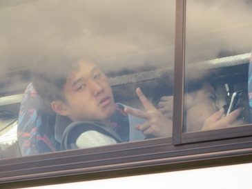

|
[2016年夏合宿]
８月２３日から行われた夏合宿の様子をお伝えします。いよいよ最終日！ おはよう。大石はいつでも元気だね。ごみく… 本日誕生日の二人。昨日のケーキを食べております…腹壊すなよ。 元気なやつ多すぎ問題。 一年全参加組。お疲れさまやね！良く乗り切ったね！ これもまた春合宿に同じような写真があるので探してみてね。 防具への手入れを欠かさない水谷（５５） は～い、おっけ～。 まさかのコーディネート被り。トレンディだね？ みんなそろそろ電源切れそうやね。 現役より一足お先にOBOGの先輩方が帰京されました。 お世話になりました！お気をつけて！ 最後のミーテイングでは各自の反省を述べてもらいました。 大西（５５）、ほしがりめ～～。 三上（５５）も～～～。 謎の笑いの渦を巻き起こす牧上（５３） 分からない人は初日に戻ってください。 おまえじゃないっつーの！ あら、なんだかかわいいじゃない。 副務おつかれさま！  気力を振り絞ってファンサしてくれました！ この深瀬はかわいいですよね？いや、いつもかわいいんですけどね？ ショウゴ・インティライミ。こいつのこの顔は許さない。 カメラに気づく人・気づかない人の違い。 お疲れ様でした！これで全行程終了です！！！いやー編集終わった！！！ ということで六日間お疲れ様でした。この思い出を大切にしてくれると５３期は嬉しいです。 またまた個人的ですが、一年の時にこの写真館で私をいじってくれた先々代の広報（今は社会 じ…う…わぁぁぁぁ）に憧れてこの編集のお仕事をいただきました。「容赦ない」かも しれませんが、話のタネの一つや二つになってくれると幸いです。 また会員でない方もこれを見てこの輪の中に入ってみたいな～、なんて思っていただければ 良いなぁと思います。その時はぜひぜひ稽古見学に気軽にいらしてください。 ということでつまらない、などのご意見は広報まで。 （文責・広報） (※写真へのコメントは全て管理人がしております。) |